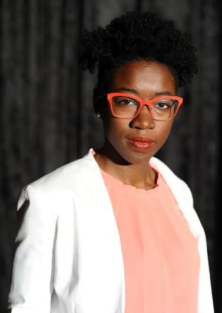

Pulse Oximeters
Pulse oximeters use light to estimate oxygen levels in the blood. Some devices can overestimate oxygen levels in people with darker skin tones.
TECH HEROES
Meet the two researchers challenging bias in technology and working toward more inclusive designs.
Valencia Koomson is an engineer and researcher at Tufts University whose work focuses on medical technology. Her work is especially important because technology that is designed to help people does not always work equally well for everyone.
Her research is connected to the problem of bias in medical devices, including pulse oximeters. These devices estimate the amount of oxygen in someone's blood, but research has shown that they can be less accurate for people with darker skin tones.
Pulse oximeters use light to estimate oxygen levels in the blood. Some devices can overestimate oxygen levels in people with darker skin tones.
If a medical device gives an inaccurate reading, a healthcare provider may not realize that a patient needs urgent treatment.
This shows that technology can reproduce existing inequalities when diverse people and experiences are not considered during the design process.
According to the People of Color in Tech article, Valencia Koomson and her colleagues at Tufts have developed a device that can recognize when the signal quality is poor or when a user has a darker skin tone. The device can then compensate by sending more light.
This is an example of technology being designed with differences between people in mind instead of assuming that one design will work equally well for everyone.
Valencia Koomson's work shows how technology can affect people differently depending on their backgrounds and experiences. Research has shown that some pulse oximeters can overestimate blood oxygen levels in people with darker skin tones, potentially contributing to unequal healthcare outcomes. This also raises questions about intersectionality, since factors such as race, socioeconomic status, and access to healthcare can overlap and create additional barriers for patients.
It has been found that some pulse oximeters may not work accurately for those with darker skin color. This is an example of why medical technology should be evaluated among diverse populations because a single technology cannot work effectively for everyone.
Improper medical diagnoses have the power to affect patient care. Where this issue combines with existing obstacles related to the accessibility of health services, more troubles may be encountered by the patients.
Inclusive design considers different populations during research and testing. This helps developers identify potential inequalities before their technology becomes widely used.
We chose Valencia Koomson because her work demonstrates that challenging bias in technology can have real effects on people's lives. Her work is not simply about creating a more advanced device. It is about questioning who the technology works for and making changes so that more people can benefit from it.
Her work also connects to implicit bias because technology can reflect the assumptions made by the people who design it. If certain groups are not included in research and testing, those groups can be overlooked even when nobody intentionally wants to exclude them.
Read the article that inspired this Tech Hero profile and learn more about bias in medical technology.
Read the ArticleLearn more about engineering efforts to create pulse oximeters that work more accurately for people with different skin tones.
Explore the ResearchRead the UK review that examined racial and other biases in medical devices.
Read the ReviewValencia Koomson's work makes us ask an important question: when we create technology, who are we designing it for? Technology can seem objective, but the choices people make while designing and testing it can affect different groups in different ways.
A computer scientist and researcher working to expose and reduce bias in artificial intelligence and facial analysis technology.

Joy Buolamwini is a computer scientist and founder of the Algorithmic Justice League. Her work centers on exposing bias in artificial intelligence and promoting companies' development of more just technology.
Her research revealed that some facial analysis systems performed less accurately when analyzing women with darker skin tones.
Facial analysis systems use artificial intelligence to identify or classify features in images of people's faces. Some systems have shown different levels of accuracy for different demographic groups.
When a technology does not perform equally well for all users it can lead to unequal outcomes, particularly in cases where decisions of great importance are made.
AI systems can embody constraints inherent in their training data, testing sets, and design choices.
Joy Buolamwini’s research provides insight into how multiple facets of one’s identity may intersect and impact their experience with technology.
For example, Buolamwini’s work with Timnit Gebru highlighted the disproportionate error rates of commercial gender classification systems for dark-skinned women compared to light-skinned men.
This relates to intersectionality, since exploring single facets of identity may provide an incomplete view of the issue. Considering factors such as race and gender together allows for more comprehensive analysis of situations.
Joy Buolamwini’s work highlights the fact that technology is not necessarily objective in its operations, despite the use of algorithms and data.
Her work calls upon tech developers to consider how their products may impact diverse groups of people and who may be unintentionally excluded from the process.
Her work intersects with the implicit bias theory, since the issue is grounded in assumptions that take part during the development process. Even when not intentional, such cognitive biases may affect the accuracy of results and the representation of information.
Learn more about Buolamwini’s organization and initiatives related to problematic artificial intelligence.
Visit the OrganizationReview the study which highlighted the disproportionate impacts of commercial gender classification systems
Explore the Research